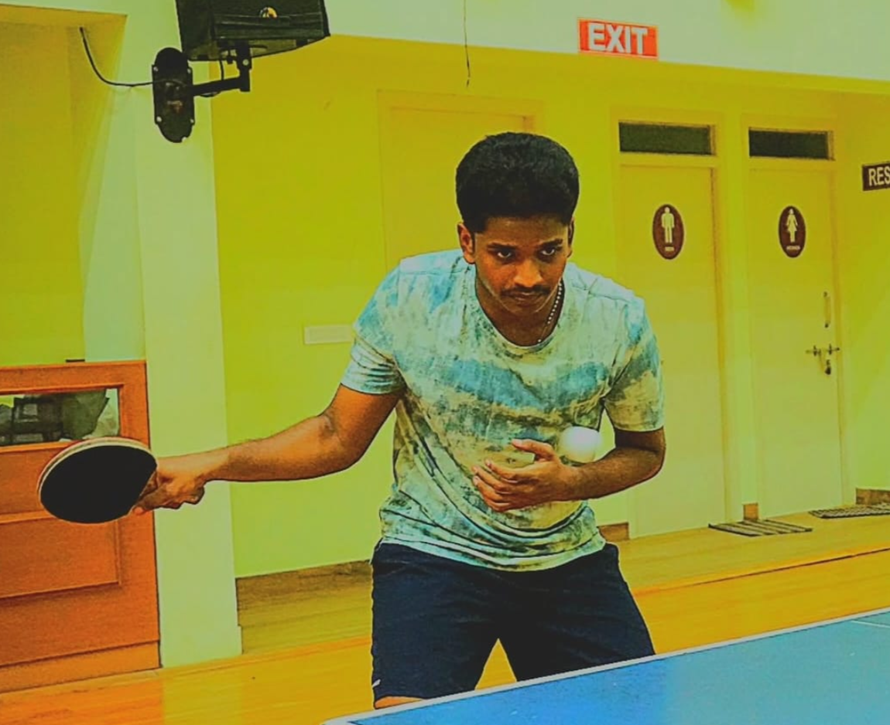

Table Tennis
The begining
I started playing table tennis at a very young age in my school since then it's been a part of my life
Every game is a test of how far ahead you can think while managing time pressure and uncertainty. The stress is real. But so is the pull to keep playing.

Style & Openings
I play the Grünfeld Defence as Black — an aggressive, theory-heavy opening that invites White to build a centre and then dismantles it. It suits my mindset: let the opponent overextend, then strike.
As White I favour the Nimzowitsch Opening — unconventional, slightly provocative, and designed to take opponents out of their preparation early.

Where I'm Going
The goal is 1900 Rapid. It's not just a number — it's a threshold that separates players who understand the game from players who've memorised it.
Getting there requires tightening endgame technique, reducing blunders under time pressure, and playing more consistently over long sessions.

Style & Openings
I play the Grünfeld Defence as Black — an aggressive, theory-heavy opening that invites White to build a centre and then dismantles it. It suits my mindset: let the opponent overextend, then strike.
As White I favour the Nimzowitsch Opening — unconventional, slightly provocative, and designed to take opponents out of their preparation early.